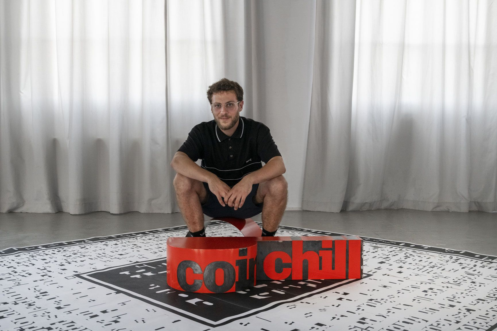

mail: felix.fritz@hotmail.com
tél: 06.01.02.67.29
Designer graphique titulaire d'un Diplôme National Supérieur d'Expression Plastique en Design Média obtenu à l'École Supérieure d'Art et Design de Saint-Étienne en 2022. (→ citedudesign.com)
Réalisation d'affiches, d'éléments de signalétique, d'objets imprimés (catalogues, brochures, bannières) et d'identités visuelles, du support imprimé jusqu'au site internet, tout en réalisant la direction artistique du projet.
Freelance depuis 2022
Disponible et ouvert à toutes formes de projet
Pour toutes demandes → felix.fritz@hotmail.com
* EPCC Cité du Design
Saint-Étienne (42000)
* CDC Habitat
Le Bourget (93350)
* Ruedi Baur
Paris 11 (75011)
* Jovera Pictures SA
Switzerland / United Kingdom
* La Poste Habitat
Maurepas (78310)
* École Supérieure d'Art et Design de Saint-Étienne
Saint-Étienne (42000)
* Atelier d'architecture Chaix et Morel
Paris 20 (75020)
* TRAFIK
Lyon (69000)
* Mairie de Villeneuve-la-Garenne
Villeneuve-la-Garenne (92390)
* moulin des moissons - Ferme de Moisan
Grosrouvre (78490)
* Denis Coueignoux
* The Next Artist
Paris (75016)
* la Seminoc
Neuilly-sur-Marne (93330)

Chaque nom en italique précédé d'une flèche (→) est un lien vers une page, donc n'hésitez pas à cliquer.
↑ IBM PLex Mono Regular